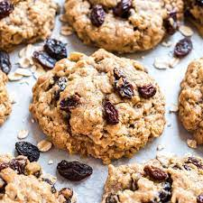
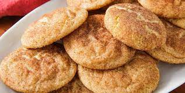

Chocolate Chip Cookie
- 2 cups + 2 tablespoons all-purpose flour
- 1/2 teaspoon baking soda
- 1/2 teaspoon salt
- 12 tablespoons butter
- 1 cup light brown sugar
- 1/2 cup grandulated sugar
- 2 teaspoons vanilla extract
- 1 1/2 cups semi-sweet chocolate chips

Oatmeal Raisin Cookie
- 1 cup unsalted butter
- 1 cup packed light or dark brown sugar
- 1/4 cup granulated sugar
- 2 large eggs
- 1 tablespoon pure vanilla extract
- 1 tablespoon unsulphured molasses
- 1 and 1/2 cups all-purpose flour
- 1 teaspoon baking soda

Snickerdoodle Cookie
- 1/2 cup butter
- 1/2 cup shortening
- 1 1/2 cups granulated sugar
- 2 large eggs
- 2 teaspoons vanilla extract
- 2 3/4 cups all-purpose flour
- 2 teaspoons cream of tartar
- 1 teaspoon baking soda